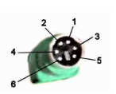
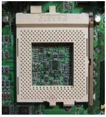

Selamat datang di Latihan Perakitan Komputer.
Sebelum Anda memulai, harap perhatikan poin-poin di bawah ini.
- Berdoalah sebelum mengerjakan
- Jumlah soal adalah 20 butir
- Ketika Anda mengerjakan soal, Anda dapat mengakhiri dan membatalkannya dengan menekan tombol kembali
- Untuk melihat soal selanjutnya klik tombol "Selanjutnya", untuk melihat soal sebelumnya klik tombol "Sebelumnya"
- Pertanyaan yang sudah dijawab, tidak dapat diganti jawabannya
- Setiap jawaban benar mendapatkan penambahan skor sebanyak 5 poin, setiap jawaban salah mendapatkan pengurangan skor sebanyak 5 poin
- Jika Anda sudah siap, klik tombol "Mulai Latihan"
Perhatikan jenis hardware di bawah ini.
- processor
- printer
- RAM
- Harddisk
- speaker
- mainboard
yang merupakan hardware utama adalah....
Langkah yang termasuk dalam rencana pemilihan hardware yang akan dibeli dalam perakitan sebuah PC adalah….
Hal-hal utama yang harus diperhatikan dalam memiih sebuah Prosesor dalam perakitan PCadalah….
Yang termasuk processing device yaitu…
Papan rangkaian komputer tempat semua komponen elektronik komputer terangkai disebut....
Beberapa alat input mempunyai fungsi ganda, yaitu disamping sebagai alat input juga berfungsi sebagai alat output sekaligus. Alat yang demikian disebut….
Periperal yang tidak menggunakan Port PS/2 adalah....
konektor berikut ini adalah jenis.....

Gambar di bawah ini adalah slot untuk memasang.....

Salah satu peripheral yang termasuk input device adalah….
RAM ( Read Only Memory ) dan Harddisk dikelompokkan sebagai storage device. Perbedaan keduanya dalam hal menyimpan adalah….
Dari peripheral di bawah ini :
- RAM
- Processor
- Floppy disk
- Mouse
- Keyboard
- hard disk
- printer
- monitor
yang termasuk media penyimpanan adalah....
Fungsi dari heatsink adalah….
Perhatikan ciri-ciri dari RAM berikut ini.
- - Berbentuk single inline memory module
- - Jumlah pin pada mainboard 72
adalah ciri-ciri dari RAM....
Proses pengulangan pengambilan program bootstrap pada saat komputer masih hidup
dengan cara menekan tombol kombinasi pada papan ketik sekaligus, yaitu Ctrl, Alt, dan
Del disebut….
RAM adalah volatile device storage sedangkan ROM adalah non-volatile device storage.
Yang dimaksud dengan volatile device adalah….
Harddisk tipe PATA disertai dengan Jumper. Kegunaan Jumper adalah untuk mengatur….
Berikut ini bukan hal-hal yang diperhatikan ketika akan merakit sebuah PC adalah….
peralatan yang tidak dibutuhkan dalam merakit PC adalah....
komponen yang bisa dipasang di slot ekspansi adalah....
- LAN Card
- VGA Card
- TV Tuner
- Memori
- Prosesor
Latihan Selesai!
Skor Anda: